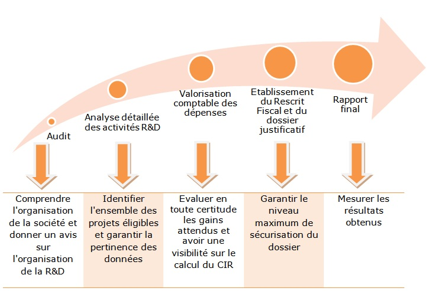

Une mesure fiscale pour soutenir les efforts de R&D
e crédit d’impôt recherche (CIR) est une aide fiscale destinée à encourager les efforts des entreprises en matière de R&D. Il s'agit d'une réduction d'impôt calculée en fonction des dépenses de R&D de l'entreprise. Si le montant du CIR est supérieur à l'impôt dû par l'entreprise, celle-ci peut mobiliser sa créance sur l'Etat. Le crédit d'impôt concerne les entreprises industrielles, commerciales et agricoles, imposées selon un régime réel d'imposition y compris celles qui bénéficient d'une exonération. Il s'agit notamment :
- Des entreprises nouvelles
- Des jeunes entreprises innovantes
- Des entreprises créées pour la reprise d'une entreprise en difficulté
- Des entreprises qui exercent ou créent des activités dans les zones franches urbaines
- Des entreprises qui participent à un projet de recherche et de développement
Le rescrit Crédit Impôt Recherche ou demande d'avis préalable
l est plus favorable pour une entreprise de demander un avis à l'administration fiscal sur l'éligibilité des projets de R&D au CIR, préalablement au démarrage des travaux. Le rescrit CIR permet réellement de lever les incertitudes sur l'éligibilité d'un ou plusieurs projets. Ce processus est largement encouragé par l'Administration Fiscale. Il permet également à l'entreprise d'établir un prévisionnel sérieux du coût de sa R&D, sans risque de reprise de montants declarés à tort. Cette demande de rescrit fiscal doit être adressée, soit à l'administration fiscales, soit directement au délégué régional à la recherche et à la technologie (DRRT), à Oséo ou à l'ANR. Le moment idéal pour faire la demande est bien évidemment celui où l'entreprise à anticipé le démarrage de son projet soit avant le début des travaux.
la réponse de l'administration doit intervenir dans un délai de 3 mois, sinon l'avis est réputé favorable et opposable lors d'un contrôle fiscal. Dans l’hypothèse d’un avis défavorable, l’entreprise dispose de deux mois pour demander un nouvel avis à l’administration qui lui a notifié la décision de rejet (article L 80 CB du LPF). Celle-ci dispose alors de trois mois pour répondre après consultation d’une commission had hoc. L’entreprise peut être entendue par cette commission à condition de l’avoir précisé dans la demande.

le rescrit CIR permet réellement de lever les incertitudes sur l'éligibilité d'un ou plusieurs projets. Ce processus est largement encouragé par l'Administration Fiscale.
Assistance au contrôle CIR
e nombreux chefs d'entreprises sont convaincus que déclarer un crédit impôt recherche déclenche automatiquement un contrôle fiscal. Bien sûr, ces dernières années, le nombre de rectifications sur le CIR n'a cessé de croître mais cela est surtout lié à l'augmentation constante du nombre de déclarants liée au succès du dispositif.
lorsque l'entreprise a bien pris soin de sécuriser sa déclaration notamment en s'assurant de l'éligibilité des projets de R&D et/ou de développement expérimental ainsi que de la recevabilité des dépenses engagées et déclarées, les risques de redressement deviennent insignifiants. Le déroulement d'un contrôle Crédit Impôt Recherche : La plupart des redressements sont liés à une méconnaissance de l'état de l'art, à une méconnaissance des activité de recherche effectivement menées ( déconnection entre le service financier et le service R&D) ou à une présentation trop succincte et incomplète du dossier justificatif technico-financier. En cas de contrôle, l'administration fiscale consulte les éléments du dossier technico-financier que l'entreprise a constitué pour illustrer la réalité des sommes déclarées et la pertinence de ses projets. Si l'administration fiscale souhaite obtenir des précisions sur le caractère scientifique et technique des travaux, elle sollicite l'avis d'experts du ministère de l'enseignement supérieur et de la recherche. Votre CIR est contrôlé et vous avez besoin d'une aide ponctuelle et rapide :
- Nous gardons toujours du temps pour traiter en urgence ce type de demande.
- Nous vous aidons concrètement à préparer votre contrôle fiscal en nous rendant dans votre entreprise, afin de faire le point avec les membres du personnel concernés et intervenir auprès d'eux pour récupérer et regrouper l'information et la documentation utile.
- Nous constituons un dossier justificatif solide que vous pourrez fournir à l'administration fiscale.
Déroulement par étape de l'accompagnement
a méthodologie d’Aléo, éprouvée depuis 2006 et qui fait aujourd’hui son succès, est basée sur des étapes structurées selon le formalisme propre de l’administration fiscale et du Ministère de l’Enseignement Supérieur et de la Recherche.

Nos engagements

Un CIR optimisé et sécurisé
3 domaines d'expertise : fiscal, technique et juridique